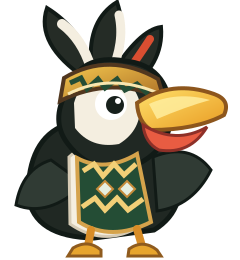

MEDIA BELAJAR BAHASA DAERAH

Belajar Bahasa
Dayak Ngaju
Kenali kosakata, temukan artinya, dan lestarikan bahasa daerah melalui permainan yang menyenangkan.
📖 0 kosakata tersedia
Pilih kata Dayak dan pasangkan dengan arti yang tepat
✧ PERJALANAN BELAJARMU ✧
0Kosakata
0Total poin
0/8Pasangan benar
0%Progres
DayakBelajar
Level 1/3
⭐ 0
BELAJAR • BERMAIN • BERTUMBUH
Pasangkan Kata!
Pilih satu kata Dayak, lalu pilih arti yang cocok dalam Bahasa Indonesia.
⭐ Poin: 0
MISI SELESAI
Hebat Sekali!
Kamu sudah menyelesaikan permainan ini.
⭐ Total poin
0